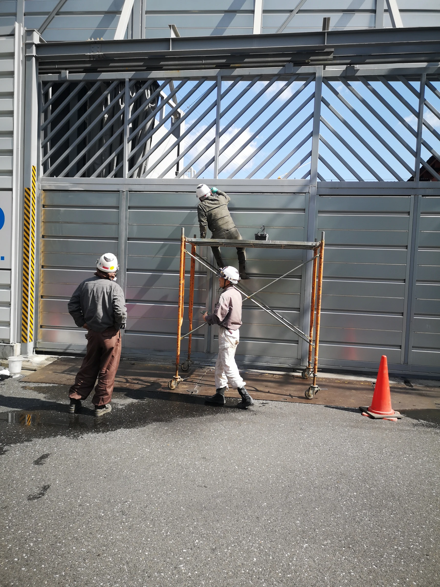

高速道路の足場工事
作業場所へアクセスするための足場に関する施工経験です。足場を設ける範囲、作業高さ、設置場所、周辺設備との位置関係を確認します。

高速道路の足場工事、遮音パネルの設置、高速道路の検査路撤去に関わる施工経験を、既存の施工写真でご紹介しています。ご相談の際は、対象となる構造物と希望する作業を分けてお知らせください。
作業場所へアクセスするための足場に関する施工経験です。足場を設ける範囲、作業高さ、設置場所、周辺設備との位置関係を確認します。
遮音パネルの設置と、検査路の撤去は対象も作業内容も異なります。対象箇所、設置・撤去の別、希望する作業範囲をお知らせください。
各写真で紹介している担当作業をご確認ください。写真に写る道路・構造物全体の施工や、道路規制の手配までを一括して担当したと示すものではありません。
取得済みの建設業許可は、とび・土工工事業です。契約・施工主体、必要な許可区分と担当範囲を確認して対応可否を検討します。
図面・施工条件が分かる資料の有無とともに、分かる範囲で次の情報をお知らせください。
道路規制や夜間作業が必要な場合は、その条件と手配担当をお知らせください。必要な体制と担当範囲は案件ごとに確認します。
高速道路での2種類の作業写真と、工場の既存壁を遮音壁へ改修した別案件の詳細事例をご紹介します。高速道路の写真紹介は、工期・数量などを掲載した個別事例ではありません。
足場を設置する範囲と、パネル自体に行う作業を分けてご記入ください。工事全体の資料がある場合も、相談したい担当範囲を併せてお知らせください。
必要とされる規制、指定された作業時間、各手配の担当、道路管理者・元請からの条件をお知らせください。対応可能な体制や作業範囲は個別に確認します。
フォームには図面・写真の有無を選ぶ項目があります。未準備の場合は、その旨と分かる範囲の対象・状態をご記入ください。図面や写真の送付方法は、お問い合わせ後に安全な方法をご案内する形です。
江戸川区を拠点に、東京・千葉・埼玉県南部・川崎周辺を中心にご相談を承ります。施工場所や工事内容によって対応可否を確認します。
対象箇所と作業内容、指定されている現場条件を分かる範囲でお知らせください。
高速道路・遮音壁工事について相談する →